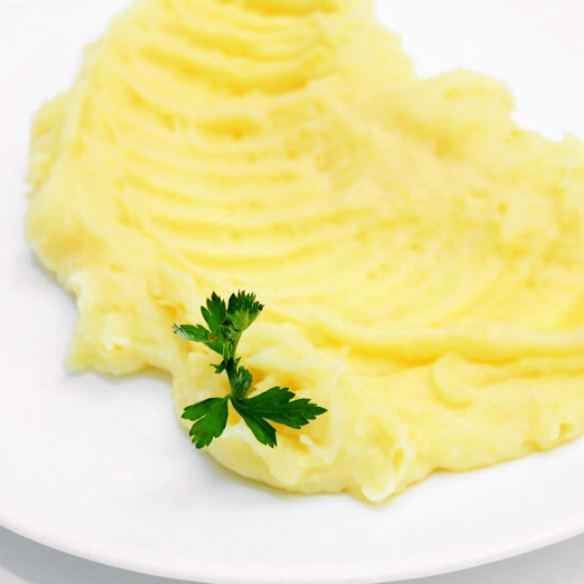

Reteta Piure

Description
Aceasta este o reteta de piure
This mashed potato recipe is a classic side dish that is creamy, buttery, and smooth. Perfect for any meal, it is easy to prepare and always a crowd-pleaser.
Ingrediente
- 4 large potatoes
- 1/2 cup butter
- 1 cup milk
- Salt to taste
Steps
- Peel and cut the potatoes into chunks.
- Boil the potatoes in salted water until tender, about 15-20 minutes.
- Drain the potatoes and return them to the pot.
- Add the butter and milk to the pot.
- Mash the potatoes until smooth and creamy.
- Season with salt to taste and serve hot.
BAck Home